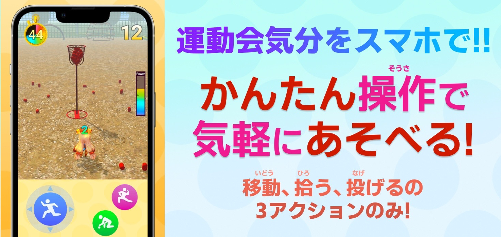
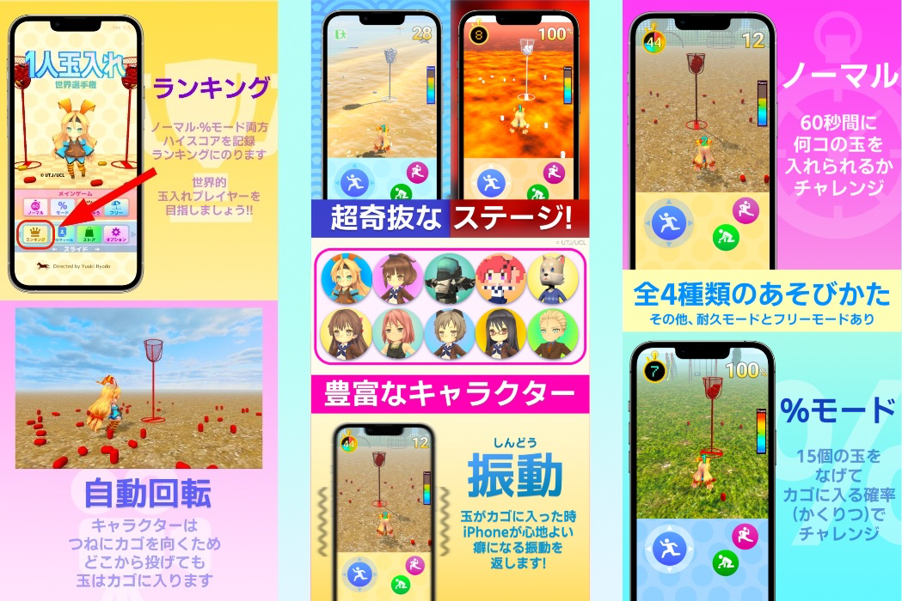
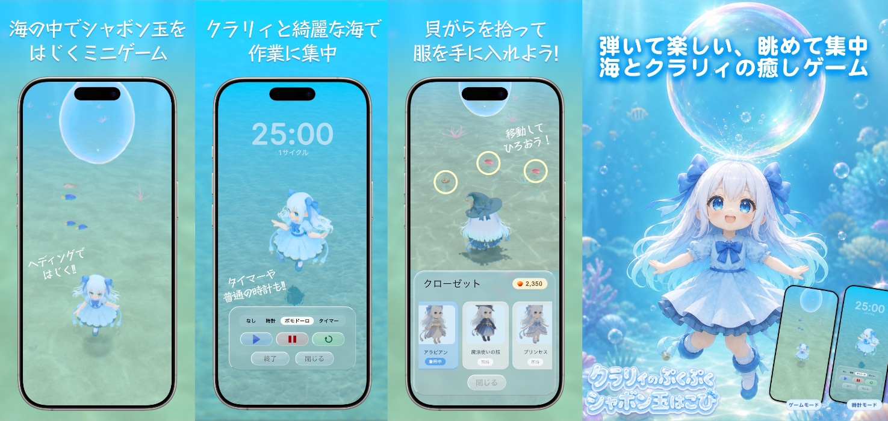

Joy from Yuuki Hyodo
Joy from Yuuki Hyodo
Joy from Yuuki Hyodo
Joy from Yuuki Hyodo
2021
1人玉入れ 世界選手権
息抜きにひと投げしよう!



Unity2020, C#で開発。新しいInput Systemを採用したのでタッチパネルの他、キーボード、コントローラー(Xbox,PlayStation)で操作できます。
カメラの動きはCinemachine、色合いに関してはPostprocessを使用しました。ログイン,ランキング機能はMicrosoft Azure
Playfabです。玉入れのカゴはBlenderで作りました。
運動会定番の玉入れをスマホ向けの3Dゲームアプリにしました。
操作は「走る」「拾う」「投げる」の3アクションのみですが、得点を伸ばすのにはテクニックが必要な奥深いゲームです。
小学生の子と親が一緒に遊ぶシーンも想定して子どもから大人まで幅広く遊べるようにしました。
入れた玉の数に応じて日本史に登場する称号が獲得できるので知識もつきます！
2026
クラリィのぷくぷくシャボン玉はこび
弾いて楽しい、眺めて集中。海とクラリィの癒しゲーム

Unity 6で開発。 1から手作業で作った玉入れとは違い、Claude CodeとCodexをフル活用。3DモデルはTripo3D、音楽はGeminiを活用して、とにかく作りたい世界観を作り込みました。
綺麗な海の中でくらげの妖精クラリィとシャボン玉を弾いてはこぶゲームアプリです。
時計やポモドーロタイマーの機能もあり一緒に作業を集中することもできます。
実在の魚をベースに水中の表現にこだわりました。日の出・日没（愛媛県伊予市の時刻）に連動して海の色が変化します。
貝がらをあつめてクラリィの着せ替えもできます。海の美しさとシャボン玉を弾く心地よい振動を楽しんでください。